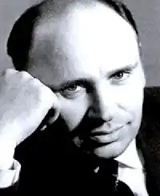

Василь Шевчук
(1932 р. нар.)
Шевчук Василь Андрійович народився 30 квітня 1932 року в селі Бараші Ємільчинського району Житомирської області в сім'ї селянина. Закінчивши середню школу, 1950 року вступає на відділення української мови й літератури філологічного факультету Київського державного університету ім. Т. Г. Шевченка. З 1955 року працював у редакції журналу "Піонерія", на кіностудії ім. О. П. Довженка, в редакціях газети "Літературна Україна" та "Романів і повістей" видавництва "Дніпро". У 1951 році в "Альманасі молодих" надрукував перші ліричні поезії. Тоді ж у журналі "Барвінок" — кілька дитячих віршів, що започаткували збірку "У труді зростаємо", яка вийшла 1953 року. Згодом з'явились друком поетичні книжки для дітей "Гілка яблуні" (1955), "Довгоногі косарі" (1959), "На зеленому роздоллі" (1968), науково-популярний нарис "Синочок сонця" (1960), повість "Горобиної ночі" (1960), збірка оповідань "Як Андрійко біди позбувся" (1965). У 1958 році виходить у світ збірка лірики В. Шевчука "Ходімо весну зустрічать!". Потім повісті "Зелений шум" (1963), "Вітрила" (1964), "Трублять лебеді над Славутичем" (1967). Етапною книгою для В. Шевчука став роман про Григорія Сковороду "Предтеча", який з'явився першим виданням 1969 року під назвою "Григорій Сковорода". Потім було ще три видання, з них одне російською мовою. Роман мав широкий розголос серед критики й читацької громадськості, й, можливо, це надихнуло автора на цілу серію історичних та історико-біографічних творів. Так, він пише і 1972 року видає роман "Побратими, або Пригоди двох запорожців на суходолі, в морі та під водою". 1980 року виходить роман-дослідження В. Шевчука "Велесич", в якому подано нову концепцію прочитання перлини давньоруської літератури "Слово о полку Ігоревім". Одночасно В. Шевчук робить віршований переспів пам'ятки, що 1982 року з'являється окремою книжкою і стає в ряд кращих поетичних інтерпретацій "Слова". Історичну серію продовжує і коротка трилогія "Під вічним небом" (1985), до якої входять психологічні і водночас документально вивірені твори про Сократа, молодого Г. Сковороду та Ганді. Після сучасного роману "Злам" (1982), в якому висвітлено зсередини, психологічно, труди та дні творчої інтелігенції, В. Шевчук повертається до історичної теми і пише та видає дилогію про Т. Г. Шевченка "Син волі" (1984) й "Tеpнoвий світ" (1986). Власне, вона була почата ще двадцять років тому повістю про дитинство Кобзаря "Вітрила" й продовжена у певній мірі романом "Фенікс" (1988). У цих творах розповідається про весь життєвий шлях Тараса Григоровича Шевченка. У дилогії, що нині має назву "Син волі", події подано через сприймання великого Кобзаря. Читаючи, ми ніби стаємо свідками його не тільки зовнішнього, а й внутрішнього, духовного життя. Цьому сприяє і побудова твору — асоціативна, із ретроспекціями. Ще 1982 року В. Шевчук опублікував у журналі "Дніпро" драматичну поему "У затінку біля Хрещатика", а в "Літературній Україні" уривок із драматичної поеми "Князь Кий". Ці та інші поетичні драми вийшли окремою книжкою "Русь первоцвітна". В. Шевчук — лауреат премії ім. Андрія Головка за 1986p.